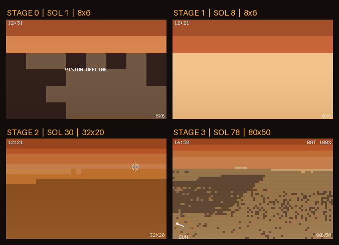
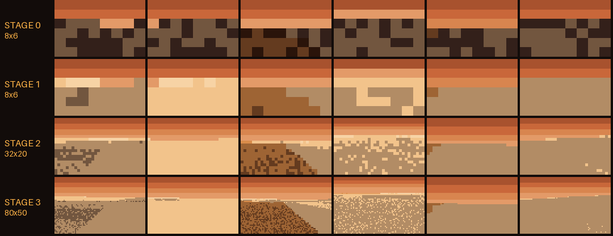
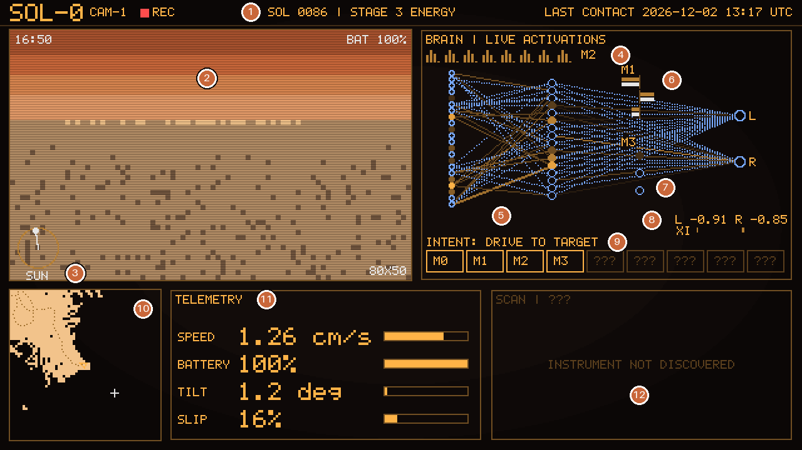
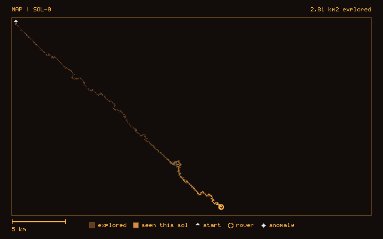
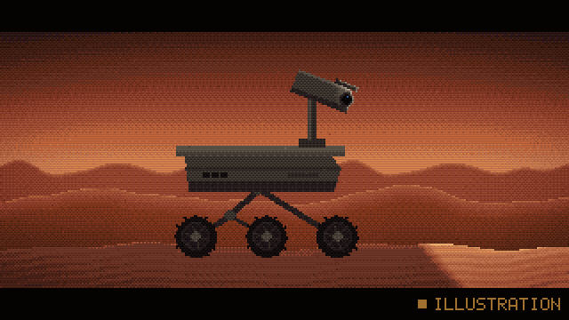

DirectLive
DétailsDetails
SOL d/n : la place de ce sol dans l'année de la planète, comptée à partir de 0 comme les sols (une année = n sols ; en année 1, d est le numéro du sol). DURÉE DU JOUR : longueur du jour simulé de ce sol.SOL d/n: the place of this sol in the planet's year, counted from 0 like the sols (one year = n sols; in year 1, d is the sol's number). DAYLIGHT: length of the simulated day of this sol.
DÉBUT DU SOL : le début, en heure UTC, du créneau de 15 minutes de ce sol. L'heure en haut à gauche de CAM-1 est l'horloge du rover.SOL START: the start, in UTC, of the 15-minute slot of this sol. The hour at the top left of CAM-1 is the rover's own clock.
Âge de la donnée : l'âge de la plus ancienne chose dessinée, le dernier pas calculé ou la dernière image de CAM-1 (une image n'arrive que tous les quelques pas). Il grandit pendant la pause de fin de sol et quand le moteur se tait.Data age: the age of the oldest thing drawn, the last computed step or the last CAM-1 image (an image only comes every few steps). It grows during the end-of-sol pause and when the engine is silent.
Connexions : luminosité = |poids x entrée|, pointillé = négatif. Les nœuds sont exacts.Connections: brightness = |weight x input|, dotted = negative. Nodes are exact.
Cliquez ou touchez un panneau pour l'agrandir.Click or tap a panel to enlarge it.
Comment ça marcheHow it works
Comment fonctionne Sol-0
Sol-0 est un petit robot qui n'existe que dans un programme. Il vit sur une planète inventée, couleur rouille, et apprend seul à s'y débrouiller avec un cerveau fait de six petits modules. Personne ne le conduit. Il est né le 13 novembre 2026 à 12:11:21 UTC et vit depuis en direct, sur un serveur allumé jour et nuit. Tout ce que montre la console est le calcul réel, au moment où il se fait.
Sol-0 en bref
- Un rover simulé : un corps à deux roues, une caméra, une batterie et un panneau solaire, sur une planète calculée par le programme.
- Un cerveau de six modules, M0 à M5 : de très petits réseaux de neurones (le plus grand a 434 réglages) et un classeur. Ni modèle de langage, ni bibliothèque d'intelligence artificielle : des réseaux écrits à la main.
- Un sol, une journée de la planète, toutes les 15 minutes : 96 par jour.
- Des stades, comme des années d'école : chacun a un examen mesuré et une durée minimale.
- Tout est réel : l'image de la caméra est exactement ce que lit le cerveau, et chaque point lumineux du cerveau est une valeur vraiment calculée.
- Rien n'a été joué d'avance : sa vie a commencé à sa naissance et personne ne sait ce qu'il vivra.
La planète et le sol
Le monde n'est ni dessiné à la main ni stocké : il est recalculé à partir d'un seul nombre, la graine. Le même nombre redonne toujours le même paysage, comme une graine de Minecraft. Le terrain est découpé en cases de 5 m ; le sol y est roche, poussière, sable ou glace. Sur la glace, les roues accrochent deux fois moins que sur la roche.
Un sol, c'est une journée de 24 heures de la planète, découpée en 1 200 pas de 72 secondes. À chaque pas, le cerveau décide de la vitesse de ses deux roues.
En direct, un sol commence toutes les 15 minutes, à heure fixe en temps universel (UTC) : 00:00, 00:15, 00:30… soit 96 sols par jour. Chaque créneau se déroule ainsi :
- 12 à 14 minutes de vie : un pas toutes les 0,6 à 0,7 seconde selon le stade, le jour puis la nuit ;
- 1 à 3 minutes de fin de sol : le cerveau apprend de ce qu'il vient de vivre, et la console montre cet apprentissage génération après génération ;
- puis l'attente du sol suivant, dont l'heure est affichée.
Les saisons passent vite. Une année de la planète dure 600 sols, soit 6 jours et 6 heures pour nous. Selon la saison, le jour du rover dure de 9,5 à 14,5 heures. Une tempête survient en moyenne un sol sur 40, environ 2,4 fois par jour : elle divise la vue par deux et réduit l'apport du panneau solaire à 35 %.
Le corps
- Deux commandes, gauche et droite, entre −1 et +1, comme un char : égales, il va tout droit ; différentes, il tourne. Sa vitesse maximale est d'environ 1,7 cm/s.
- Une batterie, vidée par les moteurs et le chauffage de nuit, remplie par le panneau solaire. Sous 15 %, c'est la panne : veille forcée jusqu'à 40 %.
- Le terrain résiste : s'il patine trop dans le sable, il s'enlise, et reculer peut le libérer ; s'il penche trop, il se renverse.
- Ses sens s'allument par stade. Un sens pas encore allumé envoie exactement 0 au cerveau, comme des yeux bandés.
Le cerveau : six modules
Le cerveau de Sol-0 n'est pas un gros réseau mais une petite équipe. Chaque module a un seul métier. Ils se passent des nombres, et aucun ne « comprend » ce qu'il fait.
Un neurone, c'est un vote pondéré
Chaque entrée vote avec sa valeur. Le poids dit combien le neurone l'écoute, et dans quel sens : un poids négatif change un « pour » en « contre ». Le neurone additionne les voix, ajoute un petit décalage (le biais), puis passe le total dans un « écraseur » qui le ramène entre −1 et +1. Un réseau, ce sont des couches de neurones : les entrées, une couche cachée au milieu, les sorties. Ses réglages sont tous ses poids et biais.
Qui fait quoi
M0 · le pilote
Conduit : à chaque pas, il choisit la commande des deux roues. Comme un conducteur qui apprend sur un parking, à force d'essais.
- Reçoit
- jusqu'à 24 valeurs : vitesse de ses roues, pente, glissement, son geste précédent, le résumé de l'image, la direction et la distance de sa cible, la batterie, le soleil, l'heure (5 entrées allumées aux stades 0 et 1, 18 au stade 2, 22 ensuite)
- Taille
- 24 → 16 → 2 : 434 réglages
- Apprend
- par évolution, à fond au stade 2
M1 · le prédicteur
Se demande : « si je fais ce geste, que va-t-il se passer ? » Il ne conduit pas : il prédit, comme un enfant qui découvre comment réagit son vélo.
- Reçoit
- le geste (les deux commandes), la pente et le glissement, en moyenne sur 20 pas
- Prédit
- de combien le rover va avancer, dériver et tourner
- Taille
- 5 → 16 → 3 : 147 réglages
- Apprend
- par gradient ; sa justesse est l'examen du stade 1
M2 · l'œil
Résume chaque photo en 8 nombres, ceux que lit le pilote. Un peu comme résumer un tableau en 8 mots, sauf que ces nombres ne sont pas des mots : personne ne sait ce que chacun « veut dire ».
- Reçoit
- 40 mesures fixes de l'image : clarté et distance, par zones
- Taille
- 40 → 8 : 320 réglages
- Apprend
- sans note : il garde les 8 façons dont les images varient le plus
M3 · l'intendant
Gère l'énergie : tous les 20 pas, il choisit de rouler, de s'arrêter au soleil pour recharger, ou de dormir. Comme un randonneur qui décide quand faire une pause pour ne pas finir la journée à bout de forces.
- Reçoit
- la batterie, la hauteur du soleil et sa tendance, l'heure, l'apport solaire, un signal de tempête
- Taille
- 8 → 8 → 3 : 99 réglages
- Apprend
- par évolution, sur des journées imaginées, à fond au stade 3
M4 · le foreur
Au stade 4, le rover reçoit un bras qui fore. M4 regarde le petit carré de sol sous le bras et décide : forer ici, ou pas. Comme un géologue qui ne veut pas rapporter dix fois le même caillou.
- Reçoit
- la couleur et la texture du carré, sa nouveauté, la batterie, le temps depuis le dernier forage, le soleil, les forages du jour
- Taille
- 10 → 8 → 1 : 97 réglages
- Apprend
- par évolution, en rejouant les vrais sites du sol ; au plus 6 forages par sol
M5 · le classeur
Au stade 5, un spectromètre mesure la lumière renvoyée par chaque échantillon, en 16 bandes : son spectre. M5 range ces spectres en familles, comme on trie des cailloux par couleur sans savoir combien de tas il faudra.
- Range
- jusqu'à 15 familles ; une famille reçoit un nom à partir de 5 membres
- Nature
- pas un réseau : un classeur qui place des centres de familles
- Apprend
- en déplaçant chaque centre vers la moyenne de ses membres
En tout, ses cinq réseaux comptent environ 1 100 réglages.
Comment il apprend
Pendant le sol, le cerveau est figé : il agit sans changer. Il apprend après, pendant la fin de sol, comme un sportif qui revoit le match le soir. C'est ce que montre la console entre deux sols : le module qui apprend, la génération en cours (par exemple 7 sur 12), la meilleure note et la note moyenne.
Par évolution (M0, M3, M4)
Entre les réglages du pilote et sa réussite (« suis-je arrivé ? »), il y a tout un simulateur : terrain, glissement, caméra bruitée. Aucune formule ne dit dans quel sens tourner chaque réglage. Alors on essaie :
- on part des réglages actuels, la « recette » ;
- on fabrique 48 variantes légèrement différentes, deux par deux, l'une dans un sens et l'autre dans le sens opposé ;
- chaque variante fait 2 parcours d'essai et reçoit une note : la distance gagnée vers la cible, moins l'énergie dépensée, moins une pénalité si elle se renverse ou s'enlise, plus un bonus à l'arrivée. Toutes roulent sur les mêmes terrains, comme des plats goûtés par le même jury ;
- on classe les variantes : seul l'ordre compte, une variante chanceuse ne peut pas tout emporter ;
- la recette avance d'un petit pas vers les mieux classées.
Par gradient (M1)
L'erreur de M1 est une simple formule : sa prédiction moins ce qui s'est vraiment passé. On peut donc calculer directement dans quel sens corriger chaque réglage, comme un randonneur dans le brouillard qui sent la pente sous ses pieds.
Sans note (M2) et par tri (M5)
M2 suit une règle fixe qui fait émerger, image après image, les grandes tendances des images. M5 déplace ses centres de familles vers la moyenne de leurs membres.
Le filet de sécurité
À partir du stade 2, le rover repasse le même examen à chaque sol (un sur quatre en consolidation) : 20 parcours fixes, réussis s'il arrive à la cible en 300 pas au plus, sans se renverser ni s'enliser. Si son score tombe deux fois de suite sous 80 % du meilleur de ses 5 dernières mesures, le pilote revient à sa meilleure version sauvegardée.
Pour aller plus loin
- L'écraseur est la fonction softsign, v / (1 + |v|). Elle n'utilise qu'une addition, une division et une valeur absolue : son résultat est identique au bit près sur toutes les machines.
- Évolution : méthode « OpenAI-ES » (Salimans et al., 2017). 24 directions de bruit ε, candidats θ ± 0,05·ε ; les notes deviennent des rangs centrés entre −0,5 et +0,5 ; la direction est la somme des (rang du « plus » − rang du « moins ») × ε, divisée par 48 × 0,05 ; l'optimiseur Adam avance d'un pas de 0,03.
- Note d'un parcours de M0, sur 160 pas : progrès − 0,002 × effort − 2 si renversé − 1 si enlisé + 5 à l'arrivée.
- M1 : rétropropagation écrite à la main, optimiseur Adam (pas de 0,01), 200 pas d'entraînement par sol au stade 1, 50 ensuite ; sa justesse, le R², est mesurée sur des sols mis de côté.
- M2 : règle de Sanger, une analyse en composantes principales calculée image après image.
- M5 : k-moyennes à démarrage chaud (10 itérations de Lloyd), sans aucun tirage au hasard ; un spectre à plus de 0,25 de tous les centres ouvre une nouvelle famille ; la stabilité se mesure par l'indice de Rand ajusté (ARI), calculé en nombres entiers.
- Hasard : un générateur maison à base d'entiers (splitmix64). Mêmes entrées, mêmes octets.
CAM-1 : ce que voit le cerveau
La caméra du rover, CAM-1, ne produit pas des couleurs mais des numéros : chaque pixel vaut de 0 à 23, une case dans une palette de 24 teintes (sols, ciel, ombres). C'est de la peinture par numéros : le cerveau lit les numéros, ou plus exactement la clarté attachée à chacun, et la console les peint pour vous.
L'image affichée est l'entrée du cerveau. C'est le même tableau de numéros, chaque pixel simplement agrandi en bloc. Les lignes de balayage assombrissent une ligne sur deux de façon réversible, et un test vérifie, pixel par pixel, que l'image publiée redonne exactement l'enregistrement. Une seule chose n'est pas dessinée : la distance de chaque pixel, que le cerveau lit aussi.
Une photo tous les 8 pas, soit 150 par sol : en direct, une nouvelle image toutes les 4,8 à 5,6 secondes. Entre deux photos, l'image reste la même, tandis que la télémétrie et le cerveau changent à chaque pas.
La vue s'affine avec les stades : 8 × 6 pixels aux stades 0 et 1, 32 × 20 au stade 2, 80 × 50 au stade 3, 160 × 100 aux stades 4 et 5. Pourquoi si peu ? L'apprentissage par essais ne sait régler que quelques centaines de nombres : M2 doit donc résumer l'image en 8. Au stade 0, aucun module ne lit encore la caméra, et la console l'indique.


Les stades et leurs examens
Les stades sont des années d'école. Pour passer au suivant, il faut les deux : réussir l'examen du stade (son critère) et y avoir passé une durée minimale. Réussir dès la rentrée ne fait pas sauter la classe.
| Stade | Ce qu'il apprend | Examen | Durée min. |
|---|---|---|---|
| 0 · réveil | bouger au hasard et noter ce que font ses gestes | 200 couples « geste → effet » enregistrés | 6 h |
| 1 · je bouge | prédire l'effet de ses roues (M1) ; l'œil (M2) s'éveille | justesse de M1 : R² ≥ 0,70 trois sols de suite (1 = parfait, 0 = pas mieux que la moyenne) | 12 h |
| 2 · conduire | rejoindre une cible en se servant de la caméra (M0) | 16 parcours réussis sur 20 à l'examen | 7 jours |
| 3 · énergie | gérer la batterie, le jour et la nuit (M3) | 20 sols de suite sans panne, en roulant | 14 jours |
| 4 · échantillons | choisir où forer (M4) | sur ses 150 derniers forages, au moins 26 échantillons nouveaux de plus qu'un foreur au hasard sur le même trajet | 14 jours |
| 5 · analyse | ranger les roches en familles (M5) | des familles stables (ARI ≥ 0,8) pendant 10 sols valides de suite | 60 jours |
Ce sont des minimums, pas des dates prévues. Personne ne sait quand Sol-0 franchira réellement ces étapes : sa vie n'a jamais été jouée d'avance, et chaque arrêt du serveur décale tout.
La barre ne ment pas. Elle plafonne à 99 % tant que le stade n'a pas changé. Quand l'examen est réussi mais que la durée minimale n'est pas écoulée, elle le dit et affiche le temps restant.
Personne ne redouble, personne n'est poussé. Si un stade dure trop (3 fois, puis 5 fois la durée visée), le seuil de l'examen baisse de 10 %. Il n'y a jamais de passage forcé.
Après le stade 5, le code actuel s'arrête : le rover entre en consolidation. Il entretient ce qu'il sait, en attendant une mise à jour de son programme. Une suite est conçue, mais pas encore construite.
La console, panneau par panneau

- Titre : numéro du sol, stade, heure du dernier contact.
- CAM-1 : ce que voit le rover, c'est-à-dire ce que lit son cerveau.
- Surimpressions : heure du sol, batterie, jauge du soleil, résolution de la caméra.
- M2 : 40 petites barres, les 40 mesures tirées de l'image.
- M0 : à gauche les entrées (ambre : positif ; bleu : négatif), au milieu les 16 neurones cachés, à droite les sorties. Les traits sont les connexions qui pèsent le plus à cet instant : leur luminosité vaut |poids × entrée|, et un pointillé signale un apport négatif.
- M1 : ce que le prédicteur attendait, face à ce qui s'est vraiment passé.
- M3 : ses trois choix, rouler, soleil ou dormir.
- Roues : L et R, la commande réellement envoyée ; XI, le petit hasard ajouté pour qu'il essaie des gestes nouveaux.
- Intention et modules : le mode en cours ; les modules éveillés, et « ??? » pour ceux pas encore découverts.
- Carte locale : 60 × 60 cases (300 m de côté) autour du rover, ce qu'il a exploré et ce qu'il voit.
- Télémétrie : les mesures du corps, vitesse (cm/s), batterie, inclinaison, glissement. La batterie s'affiche à partir du stade 3, quand le cerveau commence à la sentir.
- Instrument : vide jusqu'au stade 3. Au stade 4, le bras : le carré de 16 × 16 pixels sous le bras (exactement ce que lit M4), les 5 mesures de l'échantillon foré (dureté, rouge, vert, bleu, grain), son gain de nouveauté, la sortie de M4 et le nombre de forages du sol. Au stade 5, le SCAN : le spectre en 16 bandes, le nuage des échantillons analysés (une forme par famille) et la famille du dernier.

Sur la page, chaque panneau s'ouvre en plus grand d'un clic, d'un toucher ou avec la touche Entrée, et se referme avec Échap.
Ce que veut dire « en direct »
Sol-0 tourne sur un serveur : un ordinateur Linux loué, en Europe, allumé jour et nuit. Le vrai moteur y calcule chaque pas à son heure, jamais en avance : un pas n'existe pas avant le moment où il est dû.
Dès qu'un pas est calculé, le serveur l'envoie dans un flux continu, depuis live.sol0.fr, à toutes les pages ouvertes. Votre page le dessine tel quel : pas d'interpolation, pas d'animation inventée. La console change d'un coup à chaque pas, au plus deux fois par seconde.
L'âge de la donnée
La page indique l'âge de la donnée : depuis combien de secondes existe la chose la plus ancienne affichée. Une photo CAM-1 n'arrive que tous les 8 pas, elle peut donc être plus vieille que la télémétrie. Après une coupure ou un redémarrage, cet âge peut grandir : la page le montre au lieu de le cacher.
Ce que dit le bandeau
- CONNEXION
- La page se branche au flux et reçoit d'abord l'état exact du sol en cours.
- EN DIRECT
- Chaque pas arrive au moment où il est calculé.
- APPRENTISSAGE
- Fin de sol : la console montre les générations d'apprentissage, puis le bilan du sol et l'heure du suivant.
- MOTEUR SILENCIEUX
- Aucune nouvelle du moteur depuis 2 minutes, ou plus de 5 secondes sans pas pendant le sol. La page garde la dernière image et affiche depuis quand. Rien n'est inventé pour combler le vide.
- REPRISE
- Le serveur a redémarré en plein sol. Le sol inachevé est recalculé depuis ses entrées jusqu'au pas dû ; il doit redonner exactement les mêmes octets, ce que le moteur vérifie avec une empreinte.
- MOTEUR EN PAUSE
- Le moteur a refusé de continuer plutôt que de réparer en silence : par exemple une empreinte différente après un redémarrage, un contrôle de sa mémoire en échec, ou un disque plein. Aucun sol n'est plus calculé jusqu'à ce qu'un humain le relance ; sa mémoire n'est pas touchée.
- SERVEUR OCCUPÉ
- Le serveur refuse un moment la connexion, par exemple quand trop de spectateurs arrivent à la fois : la page réessaie toute seule.
- HORS LIGNE
- Le serveur ne répond plus (3 échecs de suite). La page montre le dernier sol publié sur GitHub, marqué comme enregistré et non en direct, et réessaie chaque minute.
Les créneaux manqués ne sont jamais rattrapés. Si le serveur s'arrête, les sols qui auraient dû avoir lieu n'existent pas : ils sont comptés, et le journal le dit dès qu'une heure entière manque. Le numéro du sol vient de la mémoire du rover, jamais de l'horloge.
Tout est réel
C'est la règle du projet. Pendant chaque sol, une trace enregistre tout : chaque image, chaque neurone, chaque commande, la position, la batterie. C'est la boîte noire d'un avion, consultée à chaque sol et pas seulement après un accident.
Les images et la console sont dessinées uniquement d'après ces valeurs enregistrées ; en direct, d'après le flux, qui porte les mêmes. Le code qui dessine n'a pas le droit d'appeler le monde, la physique ni le cerveau : un test l'interdit. D'autres tests vérifient que changer une activation dans la trace change le point dessiné. Même les défauts se voient : s'il recule, patine ou s'endort au mauvais moment, la console le montre.
Sur cette page, deux sortes d'images ne sont pas des données de Sol-0, et chacune le dit : les schémas, dessins d'explication, et les images d'essai, vraies sorties du moteur mais d'un rover de test sur une autre graine. La bande-annonce de Sol-0 est une illustration : dessinée une fois, marquée comme telle, elle ne montre rien au-delà du réveil.

Personne n'a vu sa vie avant vous
Sol-0 est né le 13 novembre 2026 à 12:11:21 UTC, au moment de sa mise en ligne. Son monde et son cerveau de départ viennent d'un nombre, sa graine de naissance, tiré de cet instant par un calcul fixe (une empreinte SHA-256 de l'heure). Ce nombre n'existait pas avant, et personne n'a joué sa vie à l'avance : les essais du projet ont utilisé d'autres graines, jamais la sienne, seulement pour tester la machine. Ce que Sol-0 vivra, on le découvre en même temps que vous.
Une fois écrite, cette graine ne change plus : un redémarrage du serveur reprend la même vie, jamais une nouvelle naissance.
Les mêmes calculs partout
Mêmes entrées, mêmes octets : n'importe quel sol peut être rejoué à l'identique, sur l'ordinateur de développement comme sur le serveur. Avant la naissance, 68 empreintes de calcul ont été comparées entre les deux machines : toutes identiques. C'est ce qui permet de reprendre un sol interrompu sans rien changer, et de croire ce qui est publié.
Le journal et les images du profil
Le serveur publie lui-même sur le profil GitHub, environ toutes les 6 heures et aussitôt après un sol marquant : les trois images d'un sol récent (la console animée, le bandeau d'avancement, la carte) et la mémoire du rover sur une branche à part, le journal sur la branche principale.
Ces images rejouent donc un sol récent, de moins de 6 heures : c'est un enregistrement, pas le direct. Le direct, c'est cette page. Les textes dessinés dans ces images restent en anglais.
Le journal est bilingue, sobre, à la première personne : c'est la voix du rover. Il n'est pas écrit par un modèle de langage : ce sont des phrases à trous remplies avec des faits mesurés. Il reçoit un résumé par jour (UTC) et une entrée immédiate pour une première fois, un changement de stade ou un incident.
Questions fréquentes
Pourquoi tout est-il si lent ?
Parce que c'est le rythme réel du rover. Un pas, ce sont 72 secondes de sa journée, et il roule au plus à environ 1,7 cm/s : un rover prudent sur une planète inconnue. Sa journée de 24 heures est pourtant jouée en 12 à 14 minutes, 100 à 120 fois plus vite que la nôtre ; à l'intérieur de ce rythme, rien n'est accéléré ni sauté. Apprendre prend aussi du temps : au moins une semaine pour savoir conduire, deux pour gérer son énergie.
Pourquoi l'image est-elle noire la nuit ?
Aux stades 0 à 2, le rover dort la nuit : caméra éteinte, cerveau à zéro, et la page indique quand le soleil se lève. À partir du stade 3, c'est M3 qui décide : dormir, ou continuer dans le noir. Même éveillé, une image de nuit est sombre et bruitée.
Sol-0 peut-il mourir ?
Non. Il peut tomber en panne de batterie, sous 15 % : il dort alors de force jusqu'à 40 %. Il peut s'enliser ou se renverser : au début du sol suivant, un mode de secours le dégage, ou le remet sur ses roues contre 10 % de batterie ; si sa batterie est restée vide tout un sol, ce mode la remonte à 40 %. Si le serveur s'arrête, sa mémoire, enregistrée après chaque sol et publiée sur GitHub environ toutes les 6 heures, reste là : il reprend la même vie.
Quelqu'un le pilote-t-il ?
Non, ni l'équipe du projet ni les visiteurs. Ses cibles sont tirées par le programme et ses gestes viennent de ses réseaux. Les seules interventions humaines sont l'entretien du serveur et, parfois, une mise à jour du programme entre deux sols, que le journal signale.
Est-ce une IA comme ChatGPT ?
Pas à la même échelle. Les cinq réseaux de Sol-0 totalisent environ 1 100 réglages ; GPT-3, un ancêtre publié en 2020, en avait 175 milliards. Sol-0 n'a jamais lu un texte : il apprend de ce qu'il vit, surtout par essais.
Pourquoi des images si pixelisées ?
Parce que c'est exactement ce que voit son cerveau, et qu'il doit rester petit pour apprendre par essais. Sa vue s'affine avec les stades, jusqu'à 160 × 100 pixels.
Que se passe-t-il au stade 5 ?
Le rover analyse ses échantillons et apprend à les ranger en familles. Après l'examen et la durée minimale du stade (60 jours au moins), il entre en consolidation : il entretient ce qu'il sait, en attendant une mise à jour de son programme. Quand y arrivera-t-il ? Personne ne le sait.
Les images du profil GitHub sont-elles en direct ?
Non : elles rejouent un sol récent, de moins de 6 heures. Le direct, c'est ici.
Pourquoi l'heure est-elle donnée en UTC ?
Les créneaux sont calés sur le temps universel, le même pour tous. En hiver, l'heure de Paris a une heure d'avance sur l'UTC, deux en été.
Que voit-on entre deux sols ?
L'apprentissage réel : le module qui apprend, chaque génération avec sa meilleure note et sa note moyenne, le résultat de l'examen quand il a lieu, puis le bilan du sol et l'heure du suivant.
Petit glossaire
- Sol
- une journée de 24 heures de la planète ; en direct, un sol toutes les 15 minutes.
- Pas
- 72 secondes de la journée du rover, une décision des roues ; 1 200 par sol.
- Créneau
- les 15 minutes, calées sur l'UTC, pendant lesquelles un sol est vécu.
- Graine
- le nombre d'où le monde et le cerveau de départ sont recalculés.
- Stade, critère
- une « année d'école » et son examen.
- Réglages
- les poids et biais d'un réseau, ce qui change quand il apprend.
- Génération
- un tour d'apprentissage par évolution : essayer des variantes, avancer vers les meilleures.
- Trace
- la boîte noire d'un sol, source de tout ce qui est dessiné.
- Empreinte
- un résumé court d'un calcul, qui change au moindre bit.
- Consolidation
- après le dernier stade : entretenir ce qu'il sait.
How Sol-0 works
Sol-0 is a small robot that exists only inside a program. It lives on an invented, rust-coloured planet and learns on its own to get by, with a brain made of six small modules. Nobody drives it. It was born on 13 November 2026 at 12:11:21 UTC and has lived live ever since, on a server that runs day and night. Everything the console shows is the real computation, as it happens.
Sol-0 at a glance
- A simulated rover: a two-wheeled body, a camera, a battery and a solar panel, on a planet computed by the program.
- A brain of six modules, M0 to M5: very small neural networks (the largest has 434 settings) and a sorter. No language model, no artificial intelligence library: networks written by hand.
- A sol, one day of the planet, every 15 minutes: 96 a day.
- Stages, like school years: each has a measured exam and a minimum duration.
- Everything is real: the camera image is exactly what the brain reads, and every glowing dot of the brain is a value actually computed.
- Nothing was played in advance: its life began at its birth and nobody knows what it will live through.
The planet and the sol
The world is neither drawn by hand nor stored: it is recomputed from a single number, the seed. The same number always gives back the same landscape, like a Minecraft seed. The ground is cut into 5 m cells of rock, dust, sand or ice. On ice, the wheels grip half as well as on rock.
A sol is one 24-hour day of the planet, cut into 1,200 steps of 72 seconds. At every step, the brain decides the speed of its two wheels.
Live, a sol starts every 15 minutes, at fixed times in Coordinated Universal Time (UTC): 00:00, 00:15, 00:30… that is 96 sols a day. Each slot goes like this:
- 12 to 14 minutes of life: one step every 0.6 to 0.7 second depending on the stage, day then night;
- 1 to 3 minutes of end of sol: the brain learns from what it just lived, and the console shows this learning generation after generation;
- then the wait for the next sol, whose time is shown.
Seasons go by fast. A year of the planet lasts 600 sols: 6 days and 6 hours for us. Depending on the season, the rover's daylight lasts 9.5 to 14.5 hours. A storm comes on average once every 40 sols, about 2.4 times a day: it halves the view and cuts the solar panel's output to 35 %.
The body
- Two commands, left and right, between −1 and +1, like a tank: equal, it goes straight; different, it turns. Its top speed is about 1.7 cm/s.
- A battery, drained by the motors and the night heater, filled by the solar panel. Below 15 %, it breaks down: forced sleep until 40 %.
- The ground fights back: if it spins too long in sand, it gets stuck, and backing up can free it; if it tilts too far, it tips over.
- Its senses switch on stage by stage. A sense not yet switched on sends exactly 0 to the brain, like a blindfold.
The brain: six modules
Sol-0's brain is not one big network but a small team. Each module has a single job. They pass numbers to each other, and none of them "understands" what it does.
A neuron is a weighted vote
Each input votes with its value. The weight says how much the neuron listens to it, and in which direction: a negative weight turns a "for" into an "against". The neuron adds up the votes, adds a small offset (the bias), then passes the total through a "squasher" that brings it between −1 and +1. A network is layers of neurons: the inputs, a hidden layer in the middle, the outputs. Its settings are all its weights and biases.
Who does what
M0 · the pilot
Drives: at every step, it picks the command of the two wheels. Like a driver learning in a car park, by trial and error.
- Gets
- up to 24 values: speed of its wheels, slope, slip, its previous gesture, the summary of the image, the direction and distance of its target, the battery, the sun, the time (5 inputs on at stages 0 and 1, 18 at stage 2, 22 after)
- Size
- 24 → 16 → 2: 434 settings
- Learns
- by evolution, at full speed at stage 2
M1 · the predictor
Wonders: "if I make this gesture, what will happen?" It does not drive: it predicts, like a child finding out how a bike responds.
- Gets
- the gesture (the two commands), the slope and the slip, averaged over 20 steps
- Predicts
- how far the rover will move forward, drift and turn
- Size
- 5 → 16 → 3: 147 settings
- Learns
- by gradient; its accuracy is the exam of stage 1
M2 · the eye
Sums up each photo in 8 numbers, the ones the pilot reads. A bit like summing up a painting in 8 words, except these numbers are not words: nobody knows what each one "means".
- Gets
- 40 fixed measures of the image: brightness and distance, by zone
- Size
- 40 → 8: 320 settings
- Learns
- without a score: it keeps the 8 ways in which the images vary the most
M3 · the steward
Manages energy: every 20 steps, it chooses to drive, to stop in the sun to recharge, or to sleep. Like a hiker deciding when to rest so as not to end the day exhausted.
- Gets
- the battery, the sun's height and its trend, the time, the solar input, a storm signal
- Size
- 8 → 8 → 3: 99 settings
- Learns
- by evolution, on imagined days, at full speed at stage 3
M4 · the driller
At stage 4, the rover gets an arm that drills. M4 looks at the small patch of ground under the arm and decides: drill here, or not. Like a geologist who does not want to bring back the same pebble ten times.
- Gets
- the colour and texture of the patch, its novelty, the battery, the time since the last drilling, the sun, the day's drillings
- Size
- 10 → 8 → 1: 97 settings
- Learns
- by evolution, replaying the sol's real sites; at most 6 drillings per sol
M5 · the sorter
At stage 5, a spectrometer measures the light sent back by each sample, in 16 bands: its spectrum. M5 sorts these spectra into families, like sorting pebbles by colour without knowing how many piles there will be.
- Sorts
- up to 15 families; a family gets a name once it has 5 members
- Nature
- not a network: a sorter that places family centres
- Learns
- by moving each centre toward the average of its members
All in all, its five networks have about 1,100 settings.
How it learns
During the sol, the brain is frozen: it acts without changing. It learns afterwards, during the end of sol, like an athlete watching the match again in the evening. That is what the console shows between two sols: the module that learns, the current generation (for example 7 of 12), the best score and the mean score.
By evolution (M0, M3, M4)
Between the pilot's settings and its success ("did I get there?") stands a whole simulator: terrain, slip, noisy camera. No formula says which way to turn each setting. So it tries:
- start from the current settings, the "recipe";
- make 48 slightly different variants, two by two, one in one direction and the other in the opposite direction;
- each variant does 2 test drives and gets a score: the distance gained toward the target, minus the energy spent, minus a penalty if it tips over or gets stuck, plus a bonus on arrival. All of them drive on the same terrains, like dishes tasted by the same jury;
- rank the variants: only the order counts, so a lucky variant cannot carry everything;
- move the recipe a small step toward the best-ranked ones.
By gradient (M1)
M1's error is a simple formula: its prediction minus what really happened. So the direction in which to correct each setting can be computed directly, like a hiker in the fog who feels the slope under their feet.
Without a score (M2) and by sorting (M5)
M2 follows a fixed rule that brings out, image after image, the main trends of the images. M5 moves its family centres toward the average of their members.
The safety net
From stage 2 on, the rover takes the same exam every sol (one in four during consolidation): 20 fixed courses, passed if it reaches the target within 300 steps without tipping over or getting stuck. If its score falls twice in a row below 80 % of the best of its last 5 measures, the pilot goes back to its best saved version.
Going further
- The squasher is the softsign function, v / (1 + |v|). It only uses an addition, a division and an absolute value: its result is bit-identical on every machine.
- Evolution: the "OpenAI-ES" method (Salimans et al., 2017). 24 noise directions ε, candidates θ ± 0.05·ε; scores become centred ranks between −0.5 and +0.5; the direction is the sum of (rank of the "plus" − rank of the "minus") × ε, divided by 48 × 0.05; the Adam optimiser moves by a step of 0.03.
- Score of one M0 drive, over 160 steps: progress − 0.002 × effort − 2 if tipped over − 1 if stuck + 5 on arrival.
- M1: backpropagation written by hand, Adam optimiser (step 0.01), 200 training steps per sol at stage 1, 50 after; its accuracy, R², is measured on sols set aside.
- M2: Sanger's rule, a principal component analysis computed image after image.
- M5: warm-started k-means (10 Lloyd iterations), with no random draw at all; a spectrum more than 0.25 away from every centre opens a new family; stability is measured by the adjusted Rand index (ARI), computed with integers.
- Randomness: a home-made integer generator (splitmix64). Same inputs, same bytes.
CAM-1: what the brain sees
The rover's camera, CAM-1, does not produce colours but numbers: each pixel is worth 0 to 23, a slot in a palette of 24 tints (grounds, sky, shadows). It is painting by numbers: the brain reads the numbers, or more exactly the brightness attached to each, and the console paints them for you.
The image shown is the brain's input. It is the same array of numbers, each pixel simply enlarged into a block. The scanlines darken every other line in a reversible way, and a test checks, pixel by pixel, that the published image gives back exactly the recording. Only one thing is not drawn: the distance of each pixel, which the brain also reads.
One photo every 8 steps, 150 per sol: live, a new image every 4.8 to 5.6 seconds. Between two photos the image stays the same, while the telemetry and the brain change at every step.
The view gets sharper with the stages: 8 × 6 pixels at stages 0 and 1, 32 × 20 at stage 2, 80 × 50 at stage 3, 160 × 100 at stages 4 and 5. Why so few? Learning by trial can only tune a few hundred numbers, so M2 has to sum up the image in 8. At stage 0, no module reads the camera yet, and the console says so.
The stages and their exams
The stages are school years. To move on, both are needed: passing the stage's exam (its criterion) and having spent a minimum time in it. Passing on the first day does not skip the year.
| Stage | What it learns | Exam | Min. time |
|---|---|---|---|
| 0 · wake-up | move at random and record what its gestures do | 200 "gesture → effect" pairs recorded | 6 h |
| 1 · I can move | predict the effect of its wheels (M1); the eye (M2) wakes up | M1's accuracy: R² ≥ 0.70 three sols in a row (1 = perfect, 0 = no better than the average) | 12 h |
| 2 · driving | reach a target using the camera (M0) | 16 of the 20 exam courses passed | 7 days |
| 3 · energy | manage the battery, day and night (M3) | 20 sols in a row without a breakdown, while driving | 14 days |
| 4 · samples | choose where to drill (M4) | over its last 150 drillings, at least 26 more new samples than a random driller along the same path | 14 days |
| 5 · analysis | sort rocks into families (M5) | stable families (ARI ≥ 0.8) for 10 valid sols in a row | 60 days |
These are minimums, not planned dates. Nobody knows when Sol-0 will actually get through these steps: its life was never played in advance, and every server stop shifts everything.
The bar does not lie. It stays at 99 % at most until the stage changes. When the exam is passed but the minimum time is not over, it says so and shows the time left.
Nobody repeats a year, nobody is pushed. If a stage lasts too long (3 times, then 5 times the target time), the exam's threshold is lowered by 10 %. There is never a forced pass.
After stage 5, the current code stops: the rover enters consolidation. It keeps up what it knows while waiting for an update of its program. A sequel is designed, but not built yet.
The console, panel by panel
- Title: sol number, stage, time of last contact.
- CAM-1: what the rover sees, that is, what its brain reads.
- Overlays: time of the sol, battery, sun gauge, camera resolution.
- M2: 40 small bars, the 40 measures taken from the image.
- M0: inputs on the left (amber: positive; blue: negative), the 16 hidden neurons in the middle, the outputs on the right. The lines are the connections that weigh the most at this instant: their brightness is |weight × input|, and a dotted line marks a negative contribution.
- M1: what the predictor expected, against what really happened.
- M3: its three choices, drive, sun or sleep.
- Wheels: L and R, the command actually sent; XI, the small randomness added so that it tries new gestures.
- Intent and modules: the current mode; the awake modules, and "???" for those not discovered yet.
- Local map: 60 × 60 cells (300 m across) around the rover, what it has explored and what it sees.
- Telemetry: the body's measures, speed (cm/s), battery, tilt, slip. The battery is shown from stage 3, when the brain starts to sense it.
- Instrument: empty until stage 3. At stage 4, the arm: the 16 × 16 pixel patch under the arm (exactly what M4 reads), the 5 measures of the drilled sample (hardness, red, green, blue, grain), its novelty gain, M4's output and the number of drillings of the sol. At stage 5, the SCAN: the spectrum in 16 bands, the cloud of analysed samples (one shape per family) and the family of the last one.
On the page, each panel opens larger with a click, a tap or the Enter key, and closes with Escape.
What "live" means
Sol-0 runs on a server: a rented Linux computer in Europe, running day and night. The real engine computes each step there at its due time, never ahead: a step does not exist before the moment it is due.
As soon as a step is computed, the server sends it in a continuous stream, from live.sol0.fr, to every open page. Your page draws it as it is: no interpolation, no made-up animation. The console changes all at once at each step, at most twice per second.
The age of the data
The page shows the age of the data: for how many seconds the oldest thing on screen has existed. A CAM-1 photo only arrives every 8 steps, so it can be older than the telemetry. After a cut or a restart this age can grow: the page shows it instead of hiding it.
What the banner says
- CONNECTING
- The page plugs into the stream and first gets the exact state of the current sol.
- LIVE
- Each step arrives as it is computed.
- LEARNING
- End of sol: the console shows the learning generations, then the sol's summary and the time of the next one.
- ENGINE SILENT
- No news from the engine for 2 minutes, or more than 5 seconds without a step during the sol. The page keeps the last image and shows since when. Nothing is made up to fill the gap.
- RESUMING
- The server restarted in the middle of a sol. The unfinished sol is recomputed from its inputs up to the due step; it must give back exactly the same bytes, which the engine checks with a fingerprint.
- ENGINE ON HOLD
- The engine refused to go on rather than repair in silence: for example a different fingerprint after a restart, a failed check of its memory, or a full disk. No sol is computed until a human restarts it; its memory is not touched.
- SERVER BUSY
- The server turns the connection away for a moment, for example when too many viewers arrive at once: the page retries on its own.
- OFFLINE
- The server no longer answers (3 failures in a row). The page shows the last sol published on GitHub, marked as recorded and not live, and retries every minute.
Missed slots are never made up. If the server stops, the sols that should have happened do not exist: they are counted, and the journal says so as soon as a whole hour is missing. The sol number comes from the rover's memory, never from the clock.
Everything is real
That is the project's rule. During each sol, a trace records everything: every image, every neuron, every command, the position, the battery. It is a plane's black box, read after every sol and not only after an accident.
The images and the console are drawn only from these recorded values; live, from the stream, which carries the same ones. The drawing code is not allowed to call the world, the physics or the brain: a test forbids it. Other tests check that changing an activation in the trace changes the drawn dot. Even flaws show: if it backs up, spins or falls asleep at the wrong time, the console shows it.
On this page, two kinds of images are not Sol-0's data, and each one says so: the diagrams, drawn to explain, and the test images, real engine output but from a test rover on another seed. Sol-0's trailer is an illustration: drawn once, labelled as such, it shows nothing beyond the wake-up.
Nobody saw its life before you
Sol-0 was born on 13 November 2026 at 12:11:21 UTC, when it went online. Its world and its starting brain come from a number, its birth seed, drawn from that instant by a fixed calculation (a SHA-256 fingerprint of the time). This number did not exist before, and nobody played its life in advance: the project's tests used other seeds, never its own, only to test the machine. What Sol-0 will live through, we find out at the same time as you.
Once written, this seed never changes: a server restart resumes the same life, never a new birth.
The same computation everywhere
Same inputs, same bytes: any sol can be replayed identically, on the development computer as on the server. Before the birth, 68 computation fingerprints were compared between the two machines: all identical. That is what makes it possible to resume an interrupted sol without changing anything, and to trust what is published.
The journal and the profile images
The server publishes by itself to the GitHub profile, about every 6 hours and right after a notable sol: the three images of a recent sol (the animated console, the progress banner, the map) and the rover's memory on a separate branch, the journal on the main branch.
These images therefore replay a recent sol, less than 6 hours old: a recording, not the live feed. The live feed is this page. The text drawn in those images stays in English.
The journal is bilingual, sober, in the first person: it is the rover's voice. It is not written by a language model: it is made of fill-in-the-blank sentences completed with measured facts. It gets one summary per day (UTC) and an immediate entry for a first time, a change of stage or an incident.
Questions
Why is everything so slow?
Because it is the rover's real pace. One step is 72 seconds of its day, and it drives at about 1.7 cm/s at most: a careful rover on an unknown planet. Its 24-hour day is still played in 12 to 14 minutes, 100 to 120 times faster than ours; within that pace, nothing is sped up or skipped. Learning takes time too: at least a week to know how to drive, two to manage its energy.
Why is the image black at night?
At stages 0 to 2, the rover sleeps at night: camera off, brain at zero, and the page says when the sun rises. From stage 3 on, M3 decides: sleep, or carry on in the dark. Even awake, a night image is dark and noisy.
Can Sol-0 die?
No. Its battery can run down below 15 %: it is then forced to sleep until 40 %. It can get stuck or tip over: at the start of the next sol, a safe mode frees it, or puts it back on its wheels at the cost of 10 % of battery; if its battery stayed empty for a whole sol, this mode brings it back to 40 %. If the server stops, its memory, saved after every sol and published on GitHub about every 6 hours, is still there: it resumes the same life.
Does anyone drive it?
No, neither the project's team nor the visitors. Its targets are drawn by the program and its gestures come from its networks. The only human interventions are server upkeep and, sometimes, an update of the program between two sols, which the journal reports.
Is it an AI like ChatGPT?
Not on the same scale. Sol-0's five networks add up to about 1,100 settings; GPT-3, an ancestor published in 2020, had 175 billion. Sol-0 has never read a text: it learns from what it lives, mostly by trial.
Why are the images so pixelated?
Because that is exactly what its brain sees, and the brain has to stay small to learn by trial. Its view gets sharper with the stages, up to 160 × 100 pixels.
What happens at stage 5?
The rover analyses its samples and learns to sort them into families. After the stage's exam and minimum time (at least 60 days), it enters consolidation: it keeps up what it knows, waiting for an update of its program. When will it get there? Nobody knows.
Are the images on the GitHub profile live?
No: they replay a recent sol, less than 6 hours old. The live feed is here.
Why are times given in UTC?
The slots are aligned on universal time, the same for everyone. Paris, for example, is one hour ahead of UTC in winter and two in summer.
What is shown between two sols?
The real learning: the module that learns, each generation with its best and mean scores, the result of the exam when it takes place, then the sol's summary and the time of the next one.
Short glossary
- Sol
- one 24-hour day of the planet; live, one sol every 15 minutes.
- Step
- 72 seconds of the rover's day, one decision of the wheels; 1,200 per sol.
- Slot
- the 15 minutes, aligned on UTC, during which a sol is lived.
- Seed
- the number from which the world and the starting brain are recomputed.
- Stage, criterion
- a "school year" and its exam.
- Settings
- a network's weights and biases, what changes when it learns.
- Generation
- one round of learning by evolution: try variants, move toward the best.
- Trace
- a sol's black box, the source of everything drawn.
- Fingerprint
- a short summary of a computation, which changes at the slightest bit.
- Consolidation
- after the last stage: keeping up what it knows.